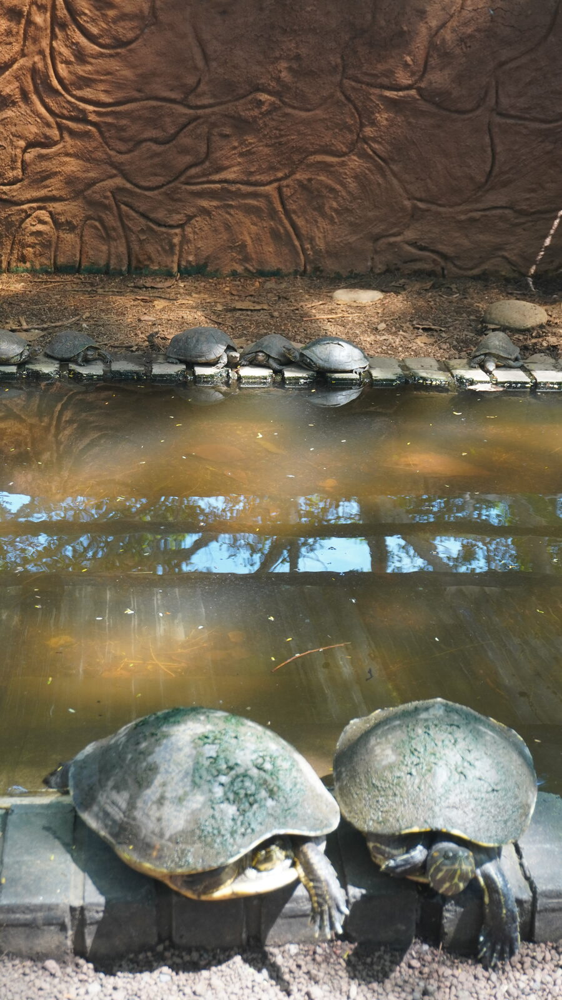
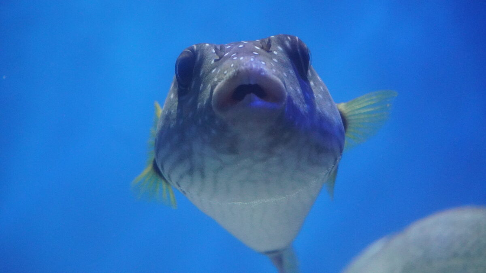
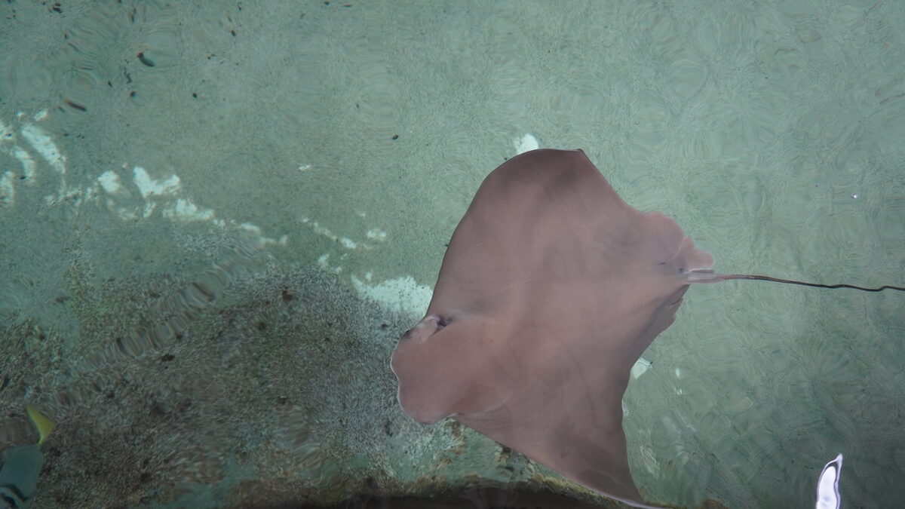
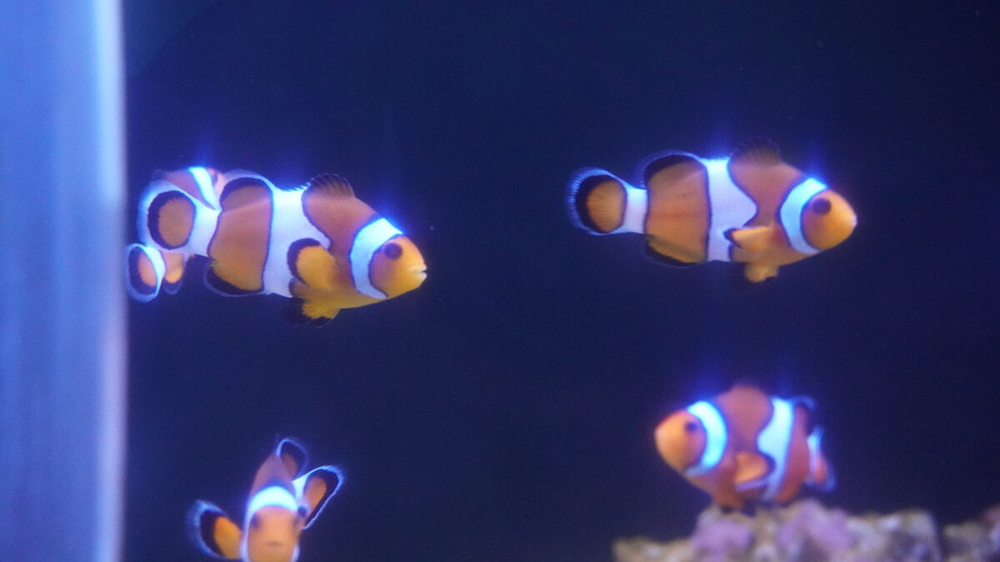
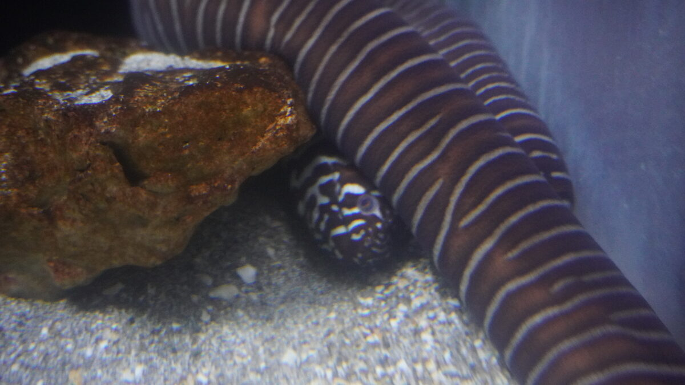

Closing the biggest cycle of my life
July 2016
One Friday or Saturday in late July 2016 I was, as usual, at a tech event; this time in Antigua Guatemala, about 3D printing and entrepreneurship. One of my best friends, Sebas, was running the workshop. I headed back at 2 p.m. because I had a soccer game at 3: I had 30 minutes to get home for my cleats and uniform, and then walk another 15 to the stadium. Back then I carried a “frijolito” (one of those phones that weren't smart and were only good for calls; honestly, I kind of want one again), so the only way to reach me was to call, and few people had my number.
I got off the bus at the Santa Lucía stop and walked toward the house where I lived then, about 500 meters away. A car pulled over: it was a cousin's uncle, a family friend, the kind who used to make heavy jokes. His wife and little girl were with him.
“Colocho, where are you going?”
“Home, I've got a game.”
He stared at me, surprised, and there was an awkward silence. Then he said:
“Look, your brother drowned in the lake.”
Not understanding what he was telling me, I thought: “Ahh, it's one of his jokes.” As always, I don't believe anything anyone says HAHAHA. I told him I'd just gotten back, nobody had called me or told me anything, and I'd go up the hill to ask.
“Oh, okay. Call me if you need anything, we're here.”
“Yeah, thanks.”
I stopped by the house of someone who, according to me, was one of my best friends HAHAHA (he says no, but since I'm the one telling this story, I say yes).
“JUAAAAAAAANJOOOOO!” I yelled, like always.
He came out and I said:
“Hey, they're saying Hanz died.”
“Yeah, man. They just called me to see if I knew anything. They told me: ‘Look, we don't know if it's true, but we know you two were very close, and it seems he died in the lake.’”
We both just stood there, puzzled. I asked him to come with me and we went to my grandmother's house. There's a really steep hill, and on the way about three people stopped to give me their condolences. I still didn't understand.
March 2017
My first trip to Costa Rica was the week of March 14, 2017, with 300 dollars saved: I spent 140 on tickets and carried the rest in colones. Two days before, I asked a friend I'd just met because we were both featured in Forbes:
“Mae, look, can I stay at your place?”
“Sure, come on over.”
“Ok, I'll be there in two days.”
I'd already bought everything, and I knew in my heart he'd say yes.
I went to Costa Rica to run away from the loneliness, the sadness, the emptiness my brother left eight months earlier. It was my first plane trip that I actually remember. I saw Carrizal, San José, La Sabana, the huge stadium in that same park, and not much else. My luggage was a couple of T-shirts, some pants, a notebook, a pen and some photos.
I spent my 22nd birthday in Costa Rica with a family that was a stranger to me, but who in those three days treated me like one of their own. We bought a “queque” (cake, in Costa Rican) and, for the first time in more than eight months, I forgot I was sad.
The second time was in July, to give a workshop at ECSL (the Central American Free Software Meeting) at the University of Costa Rica. The nice part was that Lexo, one of my best friends, came too (we fell out later HAHAHA): I picked him up, we went to give talks, and it was great.
2026
From there I jump to this year. A few months ago I was living in Xela, thinking about how hard it would be to leave the country again: because of money, because you change, people change, and the pandemic left a big hole in our hearts. We'd talked with friends all over Central America, but nothing concrete came of it. I did want to, I had the desire, but as so many times before, I lacked the conviction to do it on my own, to chase my dreams and steer them.
In February some news arrived: “Hey, we're going to build a humanoid for a company.” And I was like: “Oh come on HAHAHA, what a drag, that's a ton of work, I don't want to.” The tantrum passed and I said okay. The humanoid arrived in April and we had three days to assemble it and present it at a tech event. We didn't sleep those three days, and thanks to Claude I became an AI expert in three days and three nights. At that event we were invited to El Salvador to present Hermes, and we said: why not? Going back to El Salvador after seven years felt like the first time, but this time I was the one driving: my first time driving outside the country, and my first time driving that much.
Around then I went to see my mom and she asked me:
“So, are they paying you well where you work?”
How do I explain that I'm a partner and I'm the one who pays? HAHAHA.
“Yeah, yeah, of course.”
But I explained that this job lets me have a more relaxed lifestyle: I work a lot for a short time and spend the rest of the month calmer, so I can do more things. And I'm fine like that, because I know that once I start working the way I know how to work, I won't stop, so I'm making the most of it.
In June we were talking with José and some other friends, and José blurted out:
“I want to go to Costa Rica by bike.”
And I was like: “Ahh, cool, interesting.” In September we did another hackathon together and the idea got more serious, so I told him:
“Okay, let's go. I'll drive the car and look after you.”
No sooner said than done.
In October I told the lady I was renting from that I was leaving in three days and would leave everything clean. I started packing on Thursday, kept going on Friday, and on Saturday morning we were loading everything into the truck and cleaning so I could officially leave Xela. My things went to my grandmother's house; I left at 3 p.m. and arrived at 7, just to sleep, pull out the clothes for the trip and leave early for the capital and Antigua. That's where the route of this whole blog begins.
November 10: Puntarenas → San José
And that brings us to today. We left Puntarenas for San José, but first we stopped at the Parque Marino del Pacífico. Yes, the one that was closed yesterday HAHAHA. Today it was open, and I'm so happy watching animals. Here are some photos:










José set off pedaling from the lighthouse beach and... guess what happened? HAHAHA. Since the routine is to let him ride and wait for him further ahead, I waited across from the UCR campus in Puntarenas, and boom: a low tire pressure alert. I got out, looked at the tires and said: “Ahh, they'll hold.” And they did hold, for about another 10 km.
José finished his 20 km, we loaded the bike, he got in the car and boom: the tire went completely flat.
We put on the spare and it turns out it was flat too HAHAHA. We went from 80 km/h to 5 and crawled along veeeery slowly to a place that apparently changed tires, and nope: it was a mechanic's shop, and they didn't even do us the favor of putting some air in. In the end we found a place to fix it; in Costa Rica they're called llanteras, in Nicaragua vulcanizadoras and in Guatemala pinchazos. BUUUUUUUT we had no cash :)

They charged us 2,700 colones and, if you've been keeping up with the blog, you'll remember the 4,000 colones I had left over from the ATM at the border. They finally came in handy: I paid for the tire and off we went.
We drove on really beautiful roads, the kind you expect when you arrive in Costa Rica, and saw some really interesting things, like the “presas” (that's what they call traffic jams here) and the tolls: the road has two lanes, you reach the toll, it opens up to ten lanes just to charge you, and then it goes back down to one. It felt so surreal HAHAHA.
We got to José's friend's house, settled in and unloaded our things. We were about to have dinner when her boyfriend said:
“Well, I'm going to the municipality, want to come?”
And me, after driving for three hours:
“Sure, let's go HAHAHAHA.”
I ended up at the council meeting of the Municipality of Alajuelita HAHAHAHA.
We went back to the house, talked until around 12 and fell asleep around 1. The next morning they told us that, while I was asleep, THE POLICE came to the house to see who we were and what we were doing there HAHAHA. José's friends sorted it out, and all I got was the story.
Entering San José means a lot to me, because I arrived ten years later. Less sad, less young. I'm no longer the lively kid I used to be, but I'm the engineer who designs robots. I'm no longer the guy who gives talks: I'm the one who organizes events and invites more people, even in other countries. I'm no longer the scaredy-cat who didn't know what to do: I'm the scaredy-cat who thinks he knows what he wants, and who's in Costa Rica to make his dream of a multinational company come true.
My brother's death doesn't hurt like it did ten years ago. It hurts less, but it never stops hurting: the emptiness, the loneliness, life feels different. This time I'm not coming alone; I'm coming with José, who's a bit like my brother, because we have no filters and don't know how to measure risks. But he's also like me, or like who I want to be when I grow up.
José reminds me that you have to do things simply for the sake of doing them. Like ten years ago, when I'd tell my brother: “Dude, let's go play ball at 2 a.m. at the fields, and we'll turn on the lights while we're at it, that's what taxes are for.” And there we went, a bunch of idiots playing ball at 2 a.m., because we could, because my little town was a safe place.
José isn't Hanz, José isn't Yeffri, José is José. But he reminds me of what I had once set aside.
And so we've finished the outbound trip, from Guatemala to Costa Rica: 1,366 km in 17 days. These weeks are going to be complicated and very hectic, but here we are, and we're not afraid.
Thanks for reading this far. If you read me, I'd love for you to tell me, so I know who came along with me on this whole journey. Love you all, and see you in Guatemala on the 25th.
👆 Tap or click any point on the map to read that day's chapter.